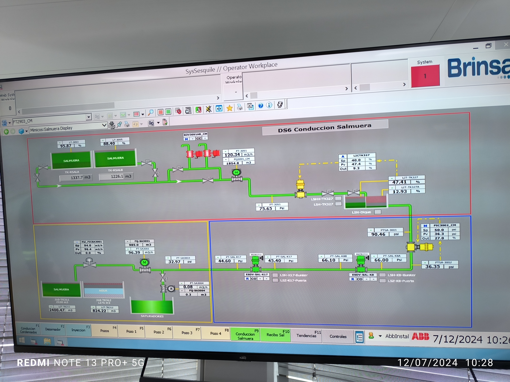
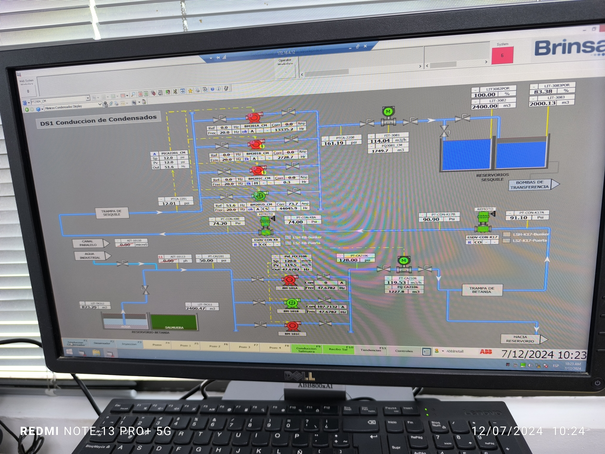

Proyecto: Reubicación enterrada por PHD del salmueroducto y línea de condensados — Cruce Humedal Arrieros (Km 16.5), BRINSA S.A.
Documento DML: P10 HROSERO 24JUN26 — Auditoría de campo SCADA
Contrastar el estado operativo real de la planta, leído de las capturas del SCADA ABB System 800xA (SysSesquile // Operator Workplace), contra el modelo hidráulico de diseño y las bases congeladas del proyecto, para validar la coherencia del modelo, confirmar la condición gobernante de integridad mecánica y registrar hallazgos críticos de operación e instrumentación.
La auditoría cubre las dos conducciones del sistema Sesquilé: salmuera saturada (mímico DS6, datos de alta confianza) y condensados (mímico DS1, datos de baja confianza por resolución de imagen). Se evalúa la condición operativa actual leída del SCADA y la envolvente de diseño futura de 300 000 kg/h por línea. Quedan fuera de alcance el modelado transitorio de golpe de ariete y la verificación geotécnica de la PHD, remitidos a la ingeniería de detalle.
La cabeza estática en parada es independiente del caudal, pues obedece a la relación hidrostática P = ρ·g·Δh, función únicamente de la cota y la densidad. Su valor es idéntico en la condición operativa actual de bajo flujo y en el máximo futuro de 300 000 kg/h por línea. El flujo máximo gobierna las pérdidas dinámicas y el golpe de ariete, mientras que la estática gobierna la selección de SDR y el esquema de aislamiento.
| Parámetro | Valor | Fuente |
|---|---|---|
| Cota origen (Mina de Sesquilé) | 2703.37 m.s.n.m. | PERFILPROYECTO.dxf, capa COTA-CLAVE-SAL |
| Cota lanzamiento PHD (Km 16.5) | 2558.35 m.s.n.m. | Plano constructivo PHD |
| Cota fondo del sifón PHD | 2542.75 m.s.n.m. | 202609-BRI-SE-CIV-PL-001-RB |
| Cota llegada (Planta Brinsa) | 2522.90 m.s.n.m. | PERFILPROYECTO.dxf |
| Densidad salmuera (26 % NaCl, 15 °C) | 1200 kg/m³ | NIST / DIPPR |
| Densidad condensado (20 °C) | 1000 kg/m³ | NIST / DIPPR |
| Tubería propuesta | HDPE PE100 SDR 17, OD 315 mm, ID 278 mm | Bases congeladas (contexto.md) |
La presión estática se calculó con P = ρ·g·Δh para la columna global intercomunicada (Sesquilé → fondo PHD, Δh = 160.62 m) y para el sifón aislado (lanzamiento → fondo, Δh = 15.60 m). Las pérdidas dinámicas se calcularon por Darcy–Weisbach con factor de fricción de Haaland en dos envolventes de caudal por línea. La capacidad de presión del HDPE se evaluó por ISO 4427 (PN = 2·MRS / [C·(SDR−1)], MRS = 10 MPa, C = 1.25) y ASME B31.3. Las lecturas en psi se normalizaron a SI con 1 psi = 0.0689476 bar. El cálculo es reproducible en auditoria_campo.py.
| Tag | Lectura campo | Conversión SI | Función |
|---|---|---|---|
| PT-3091 (recibo) | 120.34 / 75.65 psi | 8.30 / 5.22 bar | Presión de recibo TK327 |
| PQ3091_CM | 1854.8 m³/h | — | Caudal/totalizado de recibo (a verificar base) |
| LICTK327 | Sp 40.0 / Pv 47.4 / Out 9.1 % | — | Control de nivel TK327 |
| FT-SA3001 | 96.39 m³/h | — | Caudal de salmuera (condición actual) |
| Pd_FIC5A3001 | Sp 54.0 / Pv 96.4 m³/h / Out 9.1 % | — | Control de flujo anomalía |
| PTSA-3001 | 90.46 psi | 6.24 bar | Cabeza de conducción |
| PT-SAL-K8B | 66.10 / 66.00 psi | 4.56 bar | Presión búnker K8 |
| PT-SAL-K17 | 44.60 / 45.40 psi | 3.08 / 3.13 bar | Presión búnker K17 |
| PTSA-3002 | 36.35 psi | 2.51 bar | Presión final de tramo |
| PIC3002_CM | Sp 50.0 / Pv 36.3 psi / Out 27.0 % | 3.45 / 2.50 bar | Control de presión (estrangulando) |
| ESDV-SAL-K17 | R / CO | — | Válvula de corte de emergencia K17 |
| ESDV-SAL-K8 | R / CO | — | Válvula de corte de emergencia K8 |
| Elemento | Estado legible | Confianza |
|---|---|---|
| Título de mímico | DS1 Conducción de Condensados | Alta |
| Reservorio de transferencia | Presente (dos celdas) | Alta |
| Estado de bombas | Varias paradas (rojo) / en marcha (verde) | Media |
| Valores numéricos de PT/FT | No legibles | Pendiente |
No se ingresan valores numéricos del mímico de condensados al modelo por no ser legibles; se evita inventar cifras conforme a CLAUDE.md.
| Fluido | Global intercomunicado (bar) | Sifón aislado (bar) |
|---|---|---|
| Salmuera saturada | 18.90 | 1.84 |
| Condensado | 15.75 | 1.53 |
La capacidad nominal del SDR 17 es 10.00 bar (ISO 4427) y 6.25 bar (ASME B31.3). La presión estática global supera el límite PN10 en +89.0 % salmuera y +57.5 % condensado. Este sobreesfuerzo es idéntico hoy y a flujo máximo; el bajo caudal actual no es atenuante: el SDR 17 falla en parada con sifón intercomunicado en ambas envolventes.
| Fluido | Envolvente | Q (m³/h) | v (m/s) | Re | ΔP_din (bar) |
|---|---|---|---|---|---|
| Salmuera | Máximo futuro | 250.00 | 1.144 | 2.39×10⁵ | 0.196 |
| Salmuera | Actual (campo) | 96.39 | 0.441 | 9.20×10⁴ | 0.035 |
| Condensado | Máximo futuro | 300.00 | 1.373 | 3.82×10⁵ | 0.216 |
| Condensado | Actual (campo) | N/D | — | — | — |
El perfil de presión a lo largo de la conducción de salmuera desciende de 90.46 psi (6.24 bar) en la cabeza PTSA-3001 a 36.35 psi (2.51 bar) en PTSA-3002, con un gradiente medido de 54.11 psi (3.73 bar).


El análisis asume flujo incompresible y régimen estacionario. Las lecturas de campo provienen de una instantánea fotográfica del SCADA, no de un historizador. La línea de condensados se audita de forma cualitativa por ilegibilidad de plc1.jpg. No se incluye análisis de golpe de ariete, remitido a ingeniería de detalle.
ISO 4427:2007 — Plastics piping systems for water supply — Polyethylene (PE). ASME B31.3 — Process Piping. ASME B31.4 — Pipeline Transportation Systems for Liquids and Slurries. Crane Co., Technical Paper No. 410 — Flow of Fluids. Haaland, S.E. (1983), J. Fluids Eng. 105(1):89–90. Bases congeladas del proyecto en contexto.md. Cálculo reproducible en auditoria_campo.py.